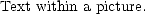

\Picture[**OSU logo**]{http://www.cis.ohio-state.edu/images/OSU.gif}
1. \Picture[replacement-for-textual-browser]{file-name attributes}
This command references the specified pictorial file. The component ‘[replacement-for-textual-browsers]’ is optional.
| | \Picture[**OSU logo**]{http://www.cis.ohio-state.edu/images/OSU.gif} |
2. \Picture+[replacement-for-text-browsers]{file-name attributes}content\EndPicture
This command produces a picture for the provided content, stores the outcome within a file of the specified name, and creates a reference to the picture within the document.

| \Picture+{ align="right"}% Text within a picture. \EndPicture |
3. \Picture*[replacement-for-text-browsers]{file-name attributes}content\EndPicture
This is a variant of the previous command, that produces a picture of the content within a vertical box.